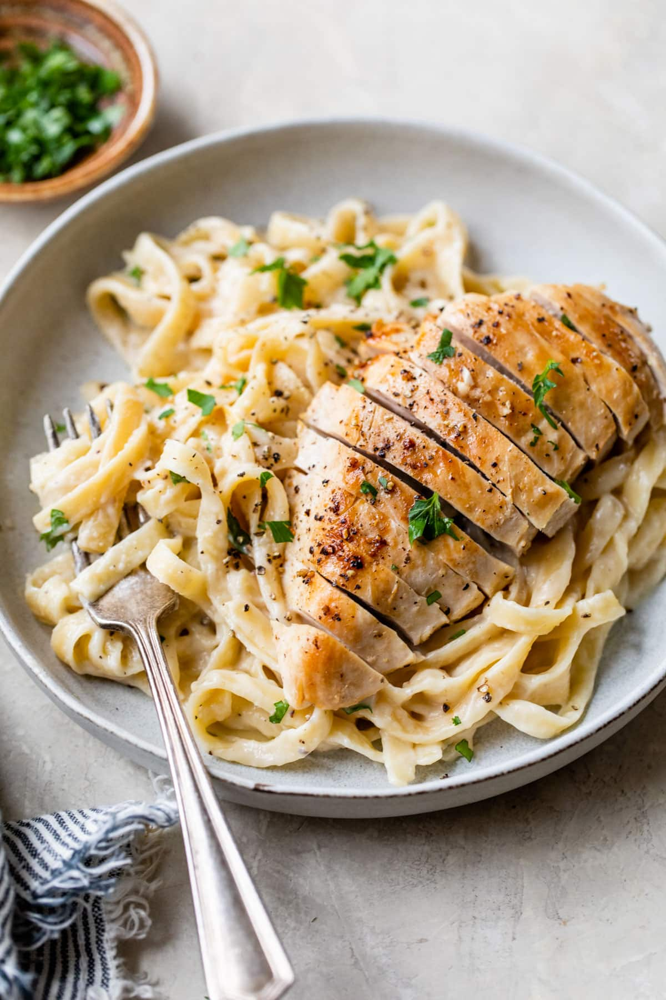

Chicken Alfredo

A creamy pasta dish featuring tender chicken breast, fettuccine, and a rich Alfredo sauce.
Ingredients:
- 250g / 8 oz. of fettuccine pasta
- 2 boneless, skinless chicken breasts
- 2 tablespoons of olive oil
- 2 cloves of garlic, minced
- 1 cup of heavy cream
- 1/2 cup of grated Parmesan cheese
- Salt and pepper, to taste
Steps:
- Cook the fettuccine pasta according to package instructions until al dente. Drain and set aside.
- Season the chicken breasts with salt and pepper. In a skillet, heat olive oil over medium-high heat and cook the chicken until no longer pink and cooked through. Remove the chicken from the skillet and slice it into strips.
- In the same skillet, add minced garlic and cook for a minute. Add heavy cream and grated Parmesan cheese. Stir until the sauce thickens.
- Return the sliced chicken to the skillet and stir to combine with the sauce.
- Add the cooked fettuccine pasta to the skillet and toss until the pasta is coated in the creamy Alfredo sauce.
- Serve hot, garnished with extra Parmesan cheese and black pepper.